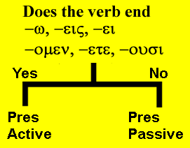

| Greek | Meaning | Notes |
|---|---|---|
| γῆ | earth | Cognate: geology |
| ζωή | life | Cognate: zoology |
| φωνή | voice, sound | Cognate: phonetic |
| ψυχή | soul, life | Cognate: psycho- |
| κεφαλή | head | Cognate: cephalic |
| ἀρχή | beginning | Cognate: archaic |
| φυλακή | a guard, prison, | watch |
| τιμή | honor, prince | Cognate: Timothy (honoring God) |
| διαθήκη | covenant, testament |
Lexical Study
- Up to this point, we have seen the Greek forms of the present indicative active verbs.
- Now we will look at the passive verbs.
- You must be sure to distinguish between the past tense and the passive voice.
- The action of the verb in the past tense occurs previous to the current time.
- The passive voice indicates that the subject of the verb is not doing the action but receiving the action.
- In some instances the person or thing who is doing the action may or may not be indicated.
- Consider the following examples in English:
- Bob was hit by a ball.
- the subject is "Bob"
- the "ball" is the thing which is doing the hitting.
- the verb "was hit" is passive because the subject is getting the action, not causing the action
- He was sliding to first base.
- "he" is the subject
- the verb "was sliding" indicates the past tense
- the verb is not a passive verb because the subject is doing the action.
- Bob was hit by a ball.
VERB FORMS
| Singular | ||
| Form | Meaning | |
|---|---|---|
| 1st | παύομαι | I am stopped |
| 2nd | παύῃ | yous are stopped |
| 3rd | παύεται | he/she/it is stopped |
| Plural | ||
| Form | Meaning | |
| 1st | παυόμεθα | we are stopped |
| 2nd | παύεσθε | youp are stopped |
| 3rd | παύονται | they are stopped |
- Notes:
- Notice that each Greek verb is made up of three elements:
- the stem (παυ-)
- the thematic ο/ε vowel (sometimes called the connecting vowel)
- the personal ending
- Examples of the thematic vowel: παύομαι, παύῃ, παύεται, παυόμεθα, παύεσθε, παύονται
- In some instances, the thematic vowel is hidden in the ending: παύῃ
- Notice that the stem (or root) is always the same: παυ-
- As we noticed with the active voice, the thematic vowel is either ο or ε.
- It follows this rule:
- ο always comes before the letters μ or ν
- ε comes before the other letters
- Learn the endings
-ομαι, -ῃ, -εται, -όμεθα, -εσθε, -ονται. - They sound like "ah-my, ay, et-tie, AH-meth-a, esth-eh, on-tie"
- Notice that the second person singular is an eta with an iota subscript.
- Place the iota subscript below the left leg of the eta. ῃ
- Notice that each Greek verb is made up of three elements:
USES OF THE PASSIVE VOICE
- When the original or direct agent doing the action is mentioned, the preposition ὐπό is used before the agent.
- παύεται ὑπὸ τοῦ ἀγγέλου.
- The agent is in the GEN case following ὐπό
- He is being stopped by the messenger.
- When the intermediate or indirect agent doing the action is mentioned, the preposition διά is used before this agent.
- παύεται διὰ τοῦ βιβλίου.
- The agent is also in the GEN case following διά
- He is stopped by the book.
- The "messenger" (of the previous example) was the direct agent, the "book" in this example is the indirect agent.
- When the agent is impersonal, the preposition ἐν is used before the agent (which is in the DAT case) or sometimes the preposition is missing and the agent is simply in the DAT case.
- οἱ ἄνθρωποι σώζονται ἐν τῷ λόγῳ τοῦ μεσσίου.
- οἱ ἄνθρωποι σώζονται τῷ λόγῳ τοῦ μεσσίου.
- The men are being saved by the word of the messiah.
- Sometimes the passive is used when there is no agent expressed.
- ἐγείρεται.
- He is being raised up.
VERB IDENTIFICATION
- When you are confronted with a verb, you need to identify its tense, mode, voice, person, and number
- To do so, you must ask yourself the following questions:
- Does it have the active endings? [yes it has -ω, -εις, -ει, -ομεν, -ετε, -ουσι]
- If yes, it is present indicative active.
- These are called primary endings.
- Does it have one of the passive endings? [-ομαι, -ῃ, -εται, -ομεθα, -εσθε, -ονται]
- If yes, then it is present indicative passive.
- These are called secondary endings.
- Does it have the active endings? [yes it has -ω, -εις, -ει, -ομεν, -ετε, -ουσι]
- In future lessons, we will expand on this verb identification procedure to discover the identity of other verbs.

Translate the following:
- οἱ οἶκοι λύονται ὑπὸ τῶν πονηρῶν ἀνθρώπων.
- ἡ ἀλήθεια διδάσκεται ἐν τοῖς λόγοις τοῦ ἀποστόλου.
- ὁ πιστὸς ἀδελφὸς σώζεται ὑπὸ τοῦ μαθητοῦ τοῦ μεσσίου.
- ὁ υἱὸς τοῦ θεοῦ κηρύσσει ἀγάπην καὶ ἀλήθειαν.
- ζωὴ ἀπὸ τοῦ υἱοῦ μένει ἐν τοῖς δικαίοις ἀνθρώποις.
- φωνὴ ἀκούεται ἐν τῇ ἐρήμῳ καὶ ὁδὸς βλέπεται εἰς οὐρανόν.
- ὁ ἀγαθὸς προφήτης βαπτίζει τὰ τέκνα.
- ὁ θεὸς γινώσκει τὰς καρδίας τῶν ἀνθρώπων καὶ πέμπει παραβολὴν ζωῆς.
- ἀναγινώσκομεν τὴν γραφὴν καὶ γινώσκομεν τὴν ὁδὸν ἀγάπης.
- οἱ ὄχλοι ἀκούουσι τὰ ἀγαθὰ τῆς βασιλείας τοῦ θεοῦ καὶ σώζονται ἐκ τοῦ κόσμου.